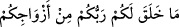

karşılık ve mükâfât “istemiyorum.” Çünkü böyle bir taleb, Allah’ın elçisi olan kimse
için bir töhmettir. “Benim ecrimi” sevabımı “verecek olan, ancak âlemlerin
Rabbidir.” Bilakis talebin konusu ancak Allah Teâlâ’dır.
Tarîkatın hilâfına olur evliyânın
Hak’tan Hakk’ın gayrını temennî etmesi
165-166. Rabbinizin sizler için yarattığı eşlerinizi bırakıp da, insanlar içinden
erkeklere mi yaklaşıyorsunuz? Doğrusu siz sınırı aşmış (sapık) bir kavimsiniz!
“Rabbinizin sizler için” sizin faydalanmanız için “yarattığı eşlerinizi bırakıp da,
insanlar içinden erkeklere mi yaklaşıyorsunuz?”
Buradaki soru inkâr/reddetmek içindir. Helâl yoldan cinsî münâsebet için: “Tarlanıza
istediğiniz şekilde gelin.” (el-Bakara, 2/224) buyrulduğu gibi fuhuş (livâta) da “
(gelmek)” fiiliyle ifâde edilmiştir.
“
” ile hayvanlarla cinsî ilişkide bulunanların kasdedilmiş olması mümkündür.
Bu durumda mânâ, sizin dışınızdaki âlemlerden/mahlûkâttan erkeklere mi yaklaşıyor,
onlarla cinsel ilişkiler kuruyor, başka insanların yapmadığı bu çirkin fiili işliyorsunuz?
demek olur. Yâni sizin bu fiiliniz reddolunur, bu husuta hiç bir mazeretiniz yoktur.
“
” ile insanların kasdedilmiş olması da mümkündür. Buna göre mânâ,
Âdem’in çocukları arasında kadınlar çok olduğu halde onların erkeklerine mi
yaklaşıyorsunuz? demektir. Yani sanki kadınlar hiç bulunmadığından sizi erkeklere
muhtaç bıraktılar.
Bu çirkin fiili onlara İblis’in öğrettiği rivâyet edilmiştir.
“
” terk ediyorsunuz, bırakıyorsunuz, demektir. Falanca pek az değer verdiği için
atıyor/bırakıyor” anlamında “
” denir.
“
”deki “ ” ile kadın cinsi kastedilmişse “ ” onu beyân
etmek/açıklamak içindir. Eğer “ ” ile kadınların mübah olan uzvu, yâni ön taraf
kastedilmişse “ ” teb’îz (bir kısmını ifâde etmek) içindir. Bu durumda onların kendi
kadınlarına yapmakta olduklarına (onlara arkadan yaklaştıklarına) da târiz vardır.
Öyleyse âyet eşlere ve câriyelere arkadan yaklaşmanın haram olduğuna delildir. Bir
hadîste şöyle buyrulmuştur: “Kim bir kadına arkasından yaklaşırsa o, Muhammed’e
indirilenden uzaktır ve Allah ona rahmet nazarıyla bakmaz.”[22] Sahâbeden bazısı
hadisi “inkâr etmiştir.” lafzıyla rivâyet etmiştir.
“Doğrusu siz sınırı aşmış” bütün günahlarda haddi aşmış “(sapık) bir kavimsiniz!”
Bu kötü fiil de o günahlardan biridir.